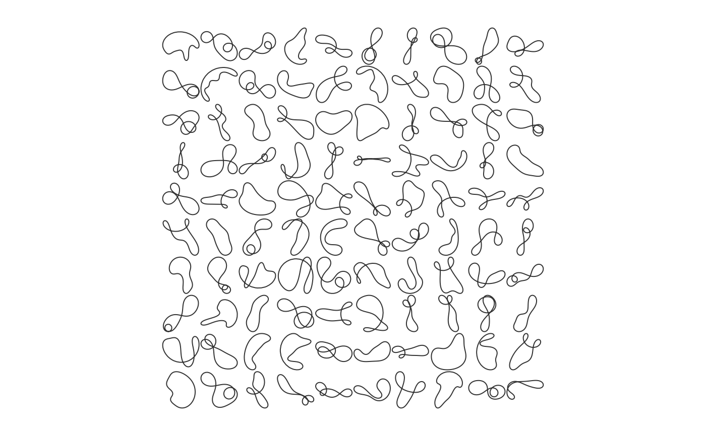

Calculates and draws 'tfourier' shapes.
tfourier_shape calculates a 'Fourier tangent angle shape' given
Fourier coefficients (see Details) or can generate some 'tfourier'
shapes.
tfourier_shape(an, bn, ao = 0, nb.h, nb.pts = 80, alpha = 2, plot = TRUE)
Arguments
| an |
|
|---|---|
| bn |
|
| ao |
|
| nb.h |
|
| nb.pts |
|
| alpha |
|
| plot |
|
Value
A matrix of (x; y) coordinates.
References
Claude, J. (2008) Morphometrics with R, Use R! series, Springer 316 pp.
See also
Other tfourier: tfourier_i,
tfourier
Examples
#> x y #> [1,] -0.068536123 0.03816985 #> [2,] 0.010421770 0.02861438 #> [3,] -0.063790622 0.05721817 #> [4,] -0.140579972 0.07793172 #> [5,] -0.183238239 0.14505793 #> [6,] -0.247181702 0.19235370 #> [7,] -0.320133871 0.22403393 #> [8,] -0.368197883 0.28740195 #> [9,] -0.418456077 0.34904422 #> [10,] -0.483991433 0.39410832 #> [11,] -0.527015593 0.46100060 #> [12,] -0.558482563 0.53404501 #> [13,] -0.615378810 0.58961904 #> [14,] -0.666002527 0.65096148 #> [15,] -0.703250243 0.72123426 #> [16,] -0.768466384 0.76675910 #> [17,] -0.843721723 0.79249409 #> [18,] -0.920086430 0.81472216 #> [19,] -0.990492372 0.77772677 #> [20,] -1.035089701 0.71187289 #> [21,] -1.107991534 0.68007700 #> [22,] -1.173409209 0.63484224 #> [23,] -1.172271234 0.55531639 #> [24,] -1.245117865 0.52339423 #> [25,] -1.169306190 0.54744097 #> [26,] -1.166890972 0.46794366 #> [27,] -1.134401707 0.39534818 #> [28,] -1.068636587 0.35062006 #> [29,] -1.007856315 0.29932275 #> [30,] -0.955597746 0.23936695 #> [31,] -0.898595892 0.18390125 #> [32,] -0.832707879 0.13935435 #> [33,] -0.769939719 0.09050956 #> [34,] -0.718591641 0.02977217 #> [35,] -0.653105984 -0.01536412 #> [36,] -0.579711689 -0.04600613 #> [37,] -0.541356302 -0.11568052 #> [38,] -0.489158357 -0.17568911 #> [39,] -0.526675851 -0.10555999 #> [40,] -0.483094002 -0.17209027 #> [41,] -0.411233403 -0.20617413 #> [42,] -0.384991638 -0.28125426 #> [43,] -0.346581120 -0.35089827 #> [44,] -0.281483742 -0.39659277 #> [45,] -0.223918101 -0.45147312 #> [46,] -0.163346561 -0.50301673 #> [47,] -0.086698985 -0.52424890 #> [48,] -0.009264515 -0.54240265 #> [49,] 0.061119622 -0.57943951 #> [50,] 0.129392040 -0.62023819 #> [51,] 0.196505793 -0.66291605 #> [52,] 0.256624481 -0.71498715 #> [53,] 0.315395180 -0.76857503 #> [54,] 0.379092808 -0.81620137 #> [55,] 0.442596932 -0.86408541 #> [56,] 0.501564226 -0.91745689 #> [57,] 0.558878373 -0.97259983 #> [58,] 0.616862632 -1.02703770 #> [59,] 0.683127662 -1.07102180 #> [60,] 0.761505112 -1.05750770 #> [61,] 0.789105491 -0.98291631 #> [62,] 0.836639557 -0.91914980 #> [63,] 0.850183366 -0.99752212 #> [64,] 0.787935223 -0.94801632 #> [65,] 0.760460379 -0.87337860 #> [66,] 0.699791505 -0.82194959 #> [67,] 0.638226839 -0.77159636 #> [68,] 0.596708767 -0.70375901 #> [69,] 0.552733618 -0.63748804 #> [70,] 0.492705339 -0.58531274 #> [71,] 0.437325328 -0.52822763 #> [72,] 0.414799359 -0.45195026 #> [73,] 0.364582422 -0.39027438 #> [74,] 0.378601540 -0.46856307 #> [75,] 0.344461362 -0.39672921 #> [76,] 0.268368346 -0.37358815 #> [77,] 0.341471182 -0.34225716 #> [78,] 0.264568188 -0.36254472 #> [79,] 0.260420375 -0.28311896 #> [80,] 0.189614910 -0.24689408tfourier_shape()#> x y #> [1,] -0.02089525 -0.06146851 #> [2,] -0.03086707 -0.14037490 #> [3,] -0.03582607 -0.21975415 #> [4,] -0.03485116 -0.29928216 #> [5,] -0.02704800 -0.37843244 #> [6,] -0.01159005 -0.45644979 #> [7,] 0.01222840 -0.53233350 #> [8,] 0.04492831 -0.60483434 #> [9,] 0.08677377 -0.67247023 #> [10,] 0.13769617 -0.73356495 #> [11,] 0.19722166 -0.78631314 #> [12,] 0.26441042 -0.82887283 #> [13,] 0.33781772 -0.85948366 #> [14,] 0.41548687 -0.87660556 #> [15,] 0.49498272 -0.87906825 #> [16,] 0.57347183 -0.86621853 #> [17,] 0.64785032 -0.83804946 #> [18,] 0.71491504 -0.79529459 #> [19,] 0.77156716 -0.73947172 #> [20,] 0.81503138 -0.67286453 #> [21,] 0.84306971 -0.59843666 #> [22,] 0.85416704 -0.51968068 #> [23,] 0.84766703 -0.44041274 #> [24,] 0.82384155 -0.36453124 #> [25,] 0.78388428 -0.29576299 #> [26,] 0.72982808 -0.23742275 #> [27,] 0.66439503 -0.19221023 #> [28,] 0.59079573 -0.16206394 #> [29,] 0.51250009 -0.14808366 #> [30,] 0.43300357 -0.15052486 #> [31,] 0.35561175 -0.16885957 #> [32,] 0.28326153 -0.20189140 #> [33,] 0.21839136 -0.24790788 #> [34,] 0.16286553 -0.30485116 #> [35,] 0.11795129 -0.37048931 #> [36,] 0.08434191 -0.44257305 #> [37,] 0.06221536 -0.51896724 #> [38,] 0.05131669 -0.59775096 #> [39,] 0.05105222 -0.67728451 #> [40,] 0.06058521 -0.75624512 #> [41,] 0.07892480 -0.83363579 #> [42,] 0.10500278 -0.90877296 #> [43,] 0.13773517 -0.98125914 #> [44,] 0.17606762 -1.05094615 #> [45,] 0.21900548 -1.11789386 #> [46,] 0.26563042 -1.18232810 #> [47,] 0.31510592 -1.24460033 #> [48,] 0.36667450 -1.30515061 #> [49,] 0.41964927 -1.36447455 #> [50,] 0.47340215 -1.42309437 #> [51,] 0.52735101 -1.48153388 #> [52,] 0.58094734 -1.54029687 #> [53,] 0.63366580 -1.59984870 #> [54,] 0.68499673 -1.66060059 #> [55,] 0.73444215 -1.72289670 #> [56,] 0.78151561 -1.78700400 #> [57,] 0.82574569 -1.85310509 #> [58,] 0.86668301 -1.92129448 #> [59,] 0.90390977 -1.99157836 #> [60,] 0.93705128 -2.06387840 #> [61,] 0.96578806 -2.13803939 #> [62,] 0.98986772 -2.21384062 #> [63,] 1.00911528 -2.29101048 #> [64,] 1.02344131 -2.36924360 #> [65,] 1.03284686 -2.44821949 #> [66,] 1.03742527 -2.52762159 #> [67,] 1.03736054 -2.60715556 #> [68,] 1.03292280 -2.68656565 #> [69,] 1.02446151 -2.76564828 #> [70,] 1.01239716 -2.84426193 #> [71,] 0.99721260 -2.92233296 #> [72,] 0.97944471 -2.99985688 #> [73,] 0.95967745 -3.07689525 #> [74,] 0.93853669 -3.15356809 #> [75,] 0.91668718 -3.23004197 #> [76,] 0.89483160 -3.30651412 #> [77,] 0.87371118 -3.38319256 #> [78,] 0.85410704 -3.46027261 #> [79,] 0.83684103 -3.53790985 #> [80,] 0.82277442 -3.61619002tfourier_shape(nb.h=6, alpha=0.4, nb.pts=500)#> x y #> [1,] 1.166102e-02 -0.001599741 #> [2,] 2.363512e-02 -0.005494383 #> [3,] 3.492540e-02 -0.011069037 #> [4,] 4.528280e-02 -0.018229446 #> [5,] 5.447051e-02 -0.026839509 #> [6,] 6.227167e-02 -0.036723292 #> [7,] 6.849656e-02 -0.047668514 #> [8,] 7.298913e-02 -0.059431341 #> [9,] 7.563239e-02 -0.071742328 #> [10,] 7.635278e-02 -0.084313257 #> [11,] 7.512314e-02 -0.096844626 #> [12,] 7.196430e-02 -0.109033513 #> [13,] 6.694537e-02 -0.120581569 #> [14,] 6.018260e-02 -0.131202879 #> [15,] 5.183704e-02 -0.140631491 #> [16,] 4.211098e-02 -0.148628427 #> [17,] 3.124347e-02 -0.154988019 #> [18,] 1.950485e-02 -0.159543469 #> [19,] 7.190609e-03 -0.162171529 #> [20,] -5.385437e-03 -0.162796260 #> [21,] -1.789842e-02 -0.161391800 #> [22,] -3.002009e-02 -0.157984119 #> [23,] -4.142679e-02 -0.152651713 #> [24,] -5.180754e-02 -0.145525210 #> [25,] -6.087233e-02 -0.136785824 #> [26,] -6.836019e-02 -0.126662623 #> [27,] -7.404723e-02 -0.115428533 #> [28,] -7.775429e-02 -0.103395039 #> [29,] -7.935398e-02 -0.090905515 #> [30,] -7.877709e-02 -0.078327184 #> [31,] -7.601774e-02 -0.066041694 #> [32,] -7.113737e-02 -0.054434403 #> [33,] -6.426681e-02 -0.043882505 #> [34,] -5.560640e-02 -0.034742230 #> [35,] -4.542371e-02 -0.027335474 #> [36,] -3.404847e-02 -0.021936295 #> [37,] -2.186468e-02 -0.018757857 #> [38,] -9.299686e-03 -0.017940481 #> [39,] 3.189659e-03 -0.019541563 #> [40,] 1.513347e-02 -0.023528118 #> [41,] 2.606746e-02 -0.029772728 #> [42,] 3.555298e-02 -0.038053557 #> [43,] 4.319754e-02 -0.048058951 #> [44,] 4.867464e-02 -0.059396879 #> [45,] 5.174167e-02 -0.071609190 #> [46,] 5.225460e-02 -0.084190292 #> [47,] 5.017824e-02 -0.096609468 #> [48,] 4.559102e-02 -0.108335704 #> [49,] 3.868369e-02 -0.118863572 #> [50,] 2.975158e-02 -0.127738519 #> [51,] 1.918069e-02 -0.134579827 #> [52,] 7.428283e-03 -0.139099583 #> [53,] -5.000725e-03 -0.141116264 #> [54,] -1.758007e-02 -0.140561900 #> [55,] -2.978922e-02 -0.137482328 #> [56,] -4.113936e-02 -0.132030575 #> [57,] -5.119635e-02 -0.124454023 #> [58,] -5.959927e-02 -0.115076489 #> [59,] -6.607329e-02 -0.104276748 #> [60,] -7.043634e-02 -0.092465270 #> [61,] -7.259963e-02 -0.080060940 #> [62,] -7.256235e-02 -0.067469442 #> [63,] -7.040166e-02 -0.055064659 #> [64,] -6.625906e-02 -0.043174068 #> [65,] -6.032470e-02 -0.032068640 #> [66,] -5.282081e-02 -0.021957318 #> [67,] -4.398575e-02 -0.012985755 #> [68,] -3.405952e-02 -0.005238681 #> [69,] -2.327155e-02 0.001254937 #> [70,] -1.183125e-02 0.006514847 #> [71,] 7.869179e-05 0.010601481 #> [72,] 1.230611e-02 0.013607739 #> [73,] 2.473073e-02 0.015651257 #> [74,] 3.726339e-02 0.016867615 #> [75,] 4.984348e-02 0.017404784 #> [76,] 6.243503e-02 0.017418920 #> [77,] 7.502179e-02 0.017071466 #> [78,] 8.760158e-02 0.016527370 #> [79,] 1.001801e-01 0.015954162 #> [80,] 1.127642e-01 0.015521501 #> [81,] 1.253552e-01 0.015400792 #> [82,] 1.379415e-01 0.015764386 #> [83,] 1.504917e-01 0.016783887 #> [84,] 1.629476e-01 0.018627087 #> [85,] 1.752179e-01 0.021453094 #> [86,] 1.871731e-01 0.025405350 #> [87,] 1.986421e-01 0.030602379 #> [88,] 2.094117e-01 0.037126415 #> [89,] 2.192296e-01 0.045010357 #> [90,] 2.278119e-01 0.054223975 #> [91,] 2.348562e-01 0.064660713 #> [92,] 2.400595e-01 0.076126864 #> [93,] 2.431423e-01 0.088335225 #> [94,] 2.438756e-01 0.100905406 #> [95,] 2.421114e-01 0.113372758 #> [96,] 2.378112e-01 0.125207256 #> [97,] 2.310706e-01 0.135842655 #> [98,] 2.221358e-01 0.144714874 #> [99,] 2.114077e-01 0.151307012 #> [100,] 1.994321e-01 0.155196932 #> [101,] 1.868731e-01 0.156102203 #> [102,] 1.744727e-01 0.153916705 #> [103,] 1.629974e-01 0.148733584 #> [104,] 1.531789e-01 0.140850468 #> [105,] 1.456537e-01 0.130754977 #> [106,] 1.409101e-01 0.119091111 #> [107,] 1.392478e-01 0.106609762 #> [108,] 1.407558e-01 0.094108834 #> [109,] 1.453105e-01 0.082369926 #> [110,] 1.525942e-01 0.072098819 #> [111,] 1.621303e-01 0.063876318 #> [112,] 1.733312e-01 0.058124194 #> [113,] 1.855514e-01 0.055088723 #> [114,] 1.981405e-01 0.054841789 #> [115,] 2.104903e-01 0.057297366 #> [116,] 2.220714e-01 0.062239561 #> [117,] 2.324580e-01 0.069357596 #> [118,] 2.413396e-01 0.078283065 #> [119,] 2.485218e-01 0.088625387 #> [120,] 2.539172e-01 0.100002409 #> [121,] 2.575308e-01 0.112064307 #> [122,] 2.594411e-01 0.124510108 #> [123,] 2.597812e-01 0.137097068 #> [124,] 2.587204e-01 0.149643860 #> [125,] 2.564490e-01 0.162028843 #> [126,] 2.531658e-01 0.174184821 #> [127,] 2.490698e-01 0.186091560 #> [128,] 2.443551e-01 0.197767115 #> [129,] 2.392083e-01 0.209258747 #> [130,] 2.338089e-01 0.220633880 #> [131,] 2.283308e-01 0.231971358 #> [132,] 2.229452e-01 0.243353022 #> [133,] 2.178229e-01 0.254855592 #> [134,] 2.131370e-01 0.266542736 #> [135,] 2.090640e-01 0.278457346 #> [136,] 2.057835e-01 0.290614065 #> [137,] 2.034759e-01 0.302992352 #> [138,] 2.023172e-01 0.315530480 #> [139,] 2.024722e-01 0.328121079 #> [140,] 2.040847e-01 0.340608953 #> [141,] 2.072664e-01 0.352791905 #> [142,] 2.120842e-01 0.364425283 #> [143,] 2.185488e-01 0.375230670 #> [144,] 2.266037e-01 0.384908799 #> [145,] 2.361182e-01 0.393156291 #> [146,] 2.468848e-01 0.399685216 #> [147,] 2.586222e-01 0.404243983 #> [148,] 2.709841e-01 0.406637635 #> [149,] 2.835752e-01 0.406745425 #> [150,] 2.959710e-01 0.404533648 #> [151,] 3.077418e-01 0.400062103 #> [152,] 3.184780e-01 0.393483217 #> [153,] 3.278136e-01 0.385033709 #> [154,] 3.354467e-01 0.375019569 #> [155,] 3.411542e-01 0.363795897 #> [156,] 3.448001e-01 0.351743728 #> [157,] 3.463359e-01 0.339246188 #> [158,] 3.457953e-01 0.326666245 #> [159,] 3.432827e-01 0.314327931 #> [160,] 3.389582e-01 0.302502297 #> [161,] 3.330204e-01 0.291398682 #> [162,] 3.256896e-01 0.281161205 #> [163,] 3.171915e-01 0.271869845 #> [164,] 3.077445e-01 0.263545096 #> [165,] 2.975496e-01 0.256155037 #> [166,] 2.867845e-01 0.249623640 #> [167,] 2.756002e-01 0.243839342 #> [168,] 2.641218e-01 0.238663110 #> [169,] 2.524514e-01 0.233935574 #> [170,] 2.406734e-01 0.229483066 #> [171,] 2.288609e-01 0.225122693 #> [172,] 2.170841e-01 0.220666790 #> [173,] 2.054186e-01 0.215927267 #> [174,] 1.939540e-01 0.210720465 #> [175,] 1.828025e-01 0.204873141 #> [176,] 1.721059e-01 0.198230173 #> [177,] 1.620408e-01 0.190664365 #> [178,] 1.528212e-01 0.182088453 #> [179,] 1.446964e-01 0.172468996 #> [180,] 1.379437e-01 0.161841251 #> [181,] 1.328555e-01 0.150323545 #> [182,] 1.297186e-01 0.138128989 #> [183,] 1.287878e-01 0.125571886 #> [184,] 1.302540e-01 0.113065984 #> [185,] 1.342098e-01 0.101111945 #> [186,] 1.406166e-01 0.090272230 #> [187,] 1.492782e-01 0.081133075 #> [188,] 1.598254e-01 0.074255216 #> [189,] 1.717176e-01 0.070117330 #> [190,] 1.842645e-01 0.069058308 #> [191,] 1.966681e-01 0.071226018 #> [192,] 2.080831e-01 0.076540630 #> [193,] 2.176906e-01 0.084679559 #> [194,] 2.247758e-01 0.095088584 #> [195,] 2.287993e-01 0.107020013 #> [196,] 2.294531e-01 0.119594580 #> [197,] 2.266924e-01 0.131879768 #> [198,] 2.207381e-01 0.142974529 #> [199,] 2.120508e-01 0.152089209 #> [200,] 2.012795e-01 0.158610472 #> [201,] 1.891938e-01 0.162143626 #> [202,] 1.766082e-01 0.162528600 #> [203,] 1.643092e-01 0.159830003 #> [204,] 1.529944e-01 0.154305344 #> [205,] 1.432277e-01 0.146358078 #> [206,] 1.354152e-01 0.136483239 #> [207,] 1.297998e-01 0.125213141 #> [208,] 1.264724e-01 0.113069198 #> [209,] 1.253942e-01 0.100523892 #> [210,] 1.264264e-01 0.087974720 #> [211,] 1.293614e-01 0.075729997 #> [212,] 1.339518e-01 0.064005000 #> [213,] 1.399355e-01 0.052926081 #> [214,] 1.470545e-01 0.042540153 #> [215,] 1.550672e-01 0.032827115 #> [216,] 1.637554e-01 0.023713273 #> [217,] 1.729255e-01 0.015084390 #> [218,] 1.824058e-01 0.006797612 #> [219,] 1.920415e-01 -0.001307959 #> [220,] 2.016870e-01 -0.009401856 #> [221,] 2.111979e-01 -0.017653569 #> [222,] 2.204226e-01 -0.026223999 #> [223,] 2.291953e-01 -0.035256491 #> [224,] 2.373308e-01 -0.044867002 #> [225,] 2.446213e-01 -0.055133240 #> [226,] 2.508382e-01 -0.066082989 #> [227,] 2.557376e-01 -0.077682277 #> [228,] 2.590710e-01 -0.089824584 #> [229,] 2.606020e-01 -0.102322712 #> [230,] 2.601274e-01 -0.114905319 #> [231,] 2.575022e-01 -0.127220160 #> [232,] 2.526657e-01 -0.138845831 #> [233,] 2.456669e-01 -0.149313075 #> [234,] 2.366830e-01 -0.158135567 #> [235,] 2.260302e-01 -0.164848624 #> [236,] 2.141612e-01 -0.169052686 #> [237,] 2.016482e-01 -0.170456993 #> [238,] 1.891510e-01 -0.168918004 #> [239,] 1.773724e-01 -0.164467007 #> [240,] 1.670042e-01 -0.157322241 #> [241,] 1.586710e-01 -0.147882671 #> [242,] 1.528777e-01 -0.136703032 #> [243,] 1.499672e-01 -0.124452470 #> [244,] 1.500948e-01 -0.111861562 #> [245,] 1.532207e-01 -0.099664199 #> [246,] 1.591224e-01 -0.088541373 #> [247,] 1.674233e-01 -0.079073396 #> [248,] 1.776341e-01 -0.071705443 #> [249,] 1.892006e-01 -0.066729106 #> [250,] 2.015517e-01 -0.064280211 #> [251,] 2.141431e-01 -0.064350993 #> [252,] 2.264915e-01 -0.066813158 #> [253,] 2.381992e-01 -0.071447588 #> [254,] 2.489659e-01 -0.077976370 #> [255,] 2.585919e-01 -0.086093451 #> [256,] 2.669723e-01 -0.095491155 #> [257,] 2.740857e-01 -0.105880890 #> [258,] 2.799804e-01 -0.117007434 #> [259,] 2.847590e-01 -0.128656969 #> [260,] 2.885647e-01 -0.140659634 #> [261,] 2.915686e-01 -0.152887629 #> [262,] 2.939602e-01 -0.165249963 #> [263,] 2.959403e-01 -0.177684861 #> [264,] 2.977154e-01 -0.190150664 #> [265,] 2.994947e-01 -0.202615861 #> [266,] 3.014873e-01 -0.215048759 #> [267,] 3.038991e-01 -0.227407171 #> [268,] 3.069298e-01 -0.239628552 #> [269,] 3.107674e-01 -0.251621046 #> [270,] 3.155813e-01 -0.263256088 #> [271,] 3.215122e-01 -0.274363364 #> [272,] 3.286605e-01 -0.284729117 #> [273,] 3.370721e-01 -0.294098828 #> [274,] 3.467239e-01 -0.302185298 #> [275,] 3.575095e-01 -0.308682802 #> [276,] 3.692289e-01 -0.313287513 #> [277,] 3.815825e-01 -0.315723596 #> [278,] 3.941740e-01 -0.315773358 #> [279,] 4.065220e-01 -0.313308867 #> [280,] 4.180837e-01 -0.308321461 #> [281,] 4.282884e-01 -0.300945058 #> [282,] 4.365802e-01 -0.291469101 #> [283,] 4.424656e-01 -0.280337681 #> [284,] 4.455620e-01 -0.268132766 #> [285,] 4.456393e-01 -0.255541450 #> [286,] 4.426520e-01 -0.243309405 #> [287,] 4.367534e-01 -0.232184945 #> [288,] 4.282924e-01 -0.222859751 #> [289,] 4.177904e-01 -0.215913138 #> [290,] 4.059012e-01 -0.211766451 #> [291,] 3.933590e-01 -0.210652864 #> [292,] 3.809198e-01 -0.212605712 #> [293,] 3.693041e-01 -0.217465881 #> [294,] 3.591459e-01 -0.224906303 #> [295,] 3.509549e-01 -0.234469501 #> [296,] 3.450922e-01 -0.245612892 #> [297,] 3.417625e-01 -0.257756217 #> [298,] 3.410209e-01 -0.270325913 #> [299,] 3.427907e-01 -0.282792467 #> [300,] 3.468895e-01 -0.294698221 #> [301,] 3.530591e-01 -0.305674707 #> [302,] 3.609958e-01 -0.315449942 #> [303,] 3.703785e-01 -0.323847137 #> [304,] 3.808916e-01 -0.330776884 #> [305,] 3.922435e-01 -0.336225059 #> [306,] 4.041783e-01 -0.340238595 #> [307,] 4.164830e-01 -0.342910900 #> [308,] 4.289899e-01 -0.344368279 #> [309,] 4.415754e-01 -0.344758213 #> [310,] 4.541563e-01 -0.344239940 #> [311,] 4.666844e-01 -0.342977433 #> [312,] 4.791404e-01 -0.341134600 #> [313,] 4.915270e-01 -0.338872382 #> [314,] 5.038628e-01 -0.336347338 #> [315,] 5.161753e-01 -0.333711251 #> [316,] 5.284956e-01 -0.331111342 #> [317,] 5.408522e-01 -0.328690675 #> [318,] 5.532671e-01 -0.326588424 #> [319,] 5.657502e-01 -0.324939722 #> [320,] 5.782967e-01 -0.323874901 #> [321,] 5.908832e-01 -0.323518001 #> [322,] 6.034661e-01 -0.323984523 #> [323,] 6.159802e-01 -0.325378493 #> [324,] 6.283389e-01 -0.327788995 #> [325,] 6.404350e-01 -0.331286397 #> [326,] 6.521435e-01 -0.335918597 #> [327,] 6.633254e-01 -0.341707608 #> [328,] 6.738323e-01 -0.348646872 #> [329,] 6.835122e-01 -0.356699610 #> [330,] 6.922161e-01 -0.365798484 #> [331,] 6.998042e-01 -0.375846747 #> [332,] 7.061524e-01 -0.386720920 #> [333,] 7.111576e-01 -0.398274910 #> [334,] 7.147425e-01 -0.410345353 #> [335,] 7.168585e-01 -0.422757853 #> [336,] 7.174869e-01 -0.435333713 #> [337,] 7.166396e-01 -0.447896724 #> [338,] 7.143565e-01 -0.460279574 #> [339,] 7.107033e-01 -0.472329508 #> [340,] 7.057666e-01 -0.483912950 #> [341,] 6.996497e-01 -0.494918889 #> [342,] 6.924672e-01 -0.505260973 #> [343,] 6.843398e-01 -0.514878320 #> [344,] 6.753898e-01 -0.523735198 #> [345,] 6.657364e-01 -0.531819729 #> [346,] 6.554927e-01 -0.539141872 #> [347,] 6.447627e-01 -0.545730906 #> [348,] 6.336399e-01 -0.551632644 #> [349,] 6.222061e-01 -0.556906585 #> [350,] 6.105313e-01 -0.561623146 #> [351,] 5.986744e-01 -0.565861108 #> [352,] 5.866840e-01 -0.569705327 #> [353,] 5.746001e-01 -0.573244744 #> [354,] 5.624558e-01 -0.576570688 #> [355,] 5.502789e-01 -0.579775421 #> [356,] 5.380943e-01 -0.582950899 #> [357,] 5.259259e-01 -0.586187661 #> [358,] 5.137982e-01 -0.589573795 #> [359,] 5.017382e-01 -0.593193932 #> [360,] 4.897771e-01 -0.597128209 #> [361,] 4.779509e-01 -0.601451179 #> [362,] 4.663017e-01 -0.606230669 #> [363,] 4.548780e-01 -0.611526578 #> [364,] 4.437348e-01 -0.617389669 #> [365,] 4.329331e-01 -0.623860386 #> [366,] 4.225392e-01 -0.630967771 #> [367,] 4.126237e-01 -0.638728553 #> [368,] 4.032596e-01 -0.647146468 #> [369,] 3.945209e-01 -0.656211906 #> [370,] 3.864803e-01 -0.665901915 #> [371,] 3.792074e-01 -0.676180617 #> [372,] 3.727663e-01 -0.687000044 #> [373,] 3.672141e-01 -0.698301379 #> [374,] 3.625988e-01 -0.710016575 #> [375,] 3.589580e-01 -0.722070280 #> [376,] 3.563181e-01 -0.734381979 #> [377,] 3.546933e-01 -0.746868274 #> [378,] 3.540862e-01 -0.759445181 #> [379,] 3.544871e-01 -0.772030350 #> [380,] 3.558757e-01 -0.784545110 #> [381,] 3.582212e-01 -0.796916268 #> [382,] 3.614846e-01 -0.809077587 #> [383,] 3.656193e-01 -0.820970924 #> [384,] 3.705733e-01 -0.832546991 #> [385,] 3.762905e-01 -0.843765763 #> [386,] 3.827124e-01 -0.854596541 #> [387,] 3.897797e-01 -0.865017712 #> [388,] 3.974332e-01 -0.875016251 #> [389,] 4.056154e-01 -0.884587013 #> [390,] 4.142709e-01 -0.893731875 #> [391,] 4.233478e-01 -0.902458763 #> [392,] 4.327973e-01 -0.910780631 #> [393,] 4.425750e-01 -0.918714404 #> [394,] 4.526402e-01 -0.926279948 #> [395,] 4.629568e-01 -0.933499063 #> [396,] 4.734924e-01 -0.940394539 #> [397,] 4.842189e-01 -0.946989275 #> [398,] 4.951117e-01 -0.953305470 #> [399,] 5.061499e-01 -0.959363897 #> [400,] 5.173160e-01 -0.965183245 #> [401,] 5.285956e-01 -0.970779541 #> [402,] 5.399771e-01 -0.976165640 #> [403,] 5.514514e-01 -0.981350775 #> [404,] 5.630123e-01 -0.986340172 #> [405,] 5.746553e-01 -0.991134714 #> [406,] 5.863781e-01 -0.995730646 #> [407,] 5.981801e-01 -1.000119334 #> [408,] 6.100619e-01 -1.004287046 #> [409,] 6.220252e-01 -1.008214777 #> [410,] 6.340721e-01 -1.011878104 #> [411,] 6.462045e-01 -1.015247082 #> [412,] 6.584238e-01 -1.018286182 #> [413,] 6.707295e-01 -1.020954297 #> [414,] 6.831183e-01 -1.023204826 #> [415,] 6.955832e-01 -1.024985870 #> [416,] 7.081121e-01 -1.026240585 #> [417,] 7.206860e-01 -1.026907734 #> [418,] 7.332775e-01 -1.026922495 #> [419,] 7.458493e-01 -1.026217602 #> [420,] 7.583521e-01 -1.024724864 #> [421,] 7.707228e-01 -1.022377164 #> [422,] 7.828834e-01 -1.019110968 #> [423,] 7.947390e-01 -1.014869412 #> [424,] 8.061777e-01 -1.009605963 #> [425,] 8.170699e-01 -1.003288657 #> [426,] 8.272692e-01 -0.995904804 #> [427,] 8.366145e-01 -0.987466031 #> [428,] 8.449328e-01 -0.978013431 #> [429,] 8.520445e-01 -0.967622495 #> [430,] 8.577690e-01 -0.956407423 #> [431,] 8.619331e-01 -0.944524345 #> [432,] 8.643804e-01 -0.932172912 #> [433,] 8.649818e-01 -0.919595730 #> [434,] 8.636469e-01 -0.907075136 #> [435,] 8.603351e-01 -0.894926927 #> [436,] 8.550660e-01 -0.883490854 #> [437,] 8.479281e-01 -0.873117911 #> [438,] 8.390845e-01 -0.864154782 #> [439,] 8.287746e-01 -0.856926125 #> [440,] 8.173117e-01 -0.851715725 #> [441,] 8.050749e-01 -0.848747805 #> [442,] 7.924966e-01 -0.848169979 #> [443,] 7.800446e-01 -0.850039406 #> [444,] 7.682006e-01 -0.854313543 #> [445,] 7.574366e-01 -0.860846654 #> [446,] 7.481893e-01 -0.869392773 #> [447,] 7.408376e-01 -0.879615260 #> [448,] 7.356809e-01 -0.891102470 #> [449,] 7.329240e-01 -0.903388499 #> [450,] 7.326667e-01 -0.915977424 #> [451,] 7.349010e-01 -0.928369151 #> [452,] 7.395151e-01 -0.940084857 #> [453,] 7.463031e-01 -0.950690071 #> [454,] 7.549809e-01 -0.959813759 #> [455,] 7.652058e-01 -0.967162208 #> [456,] 7.765973e-01 -0.972527070 #> [457,] 7.887594e-01 -0.975787469 #> [458,] 8.013011e-01 -0.976906625 #> [459,] 8.138542e-01 -0.975923856 #> [460,] 8.260879e-01 -0.972943099 #> [461,] 8.377188e-01 -0.968119240 #> [462,] 8.485175e-01 -0.961643511 #> [463,] 8.583108e-01 -0.953729097 #> [464,] 8.669808e-01 -0.944597879 #> [465,] 8.744609e-01 -0.934468971 #> [466,] 8.807308e-01 -0.923549458 #> [467,] 8.858093e-01 -0.912027489 #> [468,] 8.897476e-01 -0.900067666 #> [469,] 8.926218e-01 -0.887808550 #> [470,] 8.945270e-01 -0.875361966 #> [471,] 8.955711e-01 -0.862813777 #> [472,] 8.958705e-01 -0.850225781 #> [473,] 8.955459e-01 -0.837638410 #> [474,] 8.947205e-01 -0.825073944 #> [475,] 8.935170e-01 -0.812540032 #> [476,] 8.920576e-01 -0.800033339 #> [477,] 8.904627e-01 -0.787543207 #> [478,] 8.888509e-01 -0.775055239 #> [479,] 8.873392e-01 -0.762554760 #> [480,] 8.860428e-01 -0.750030123 #> [481,] 8.850750e-01 -0.737475813 #> [482,] 8.845471e-01 -0.724895330 #> [483,] 8.845673e-01 -0.712303792 #> [484,] 8.852398e-01 -0.699730206 #> [485,] 8.866627e-01 -0.687219316 #> [486,] 8.889266e-01 -0.674832944 #> [487,] 8.921110e-01 -0.662650718 #> [488,] 8.962821e-01 -0.650770079 #> [489,] 9.014888e-01 -0.639305479 #> [490,] 9.077599e-01 -0.628386685 #> [491,] 9.151005e-01 -0.618156156 #> [492,] 9.234887e-01 -0.608765490 #> [493,] 9.328738e-01 -0.600370997 #> [494,] 9.431740e-01 -0.593128510 #> [495,] 9.542759e-01 -0.587187596 #> [496,] 9.660350e-01 -0.582685404 #> [497,] 9.782774e-01 -0.579740403 #> [498,] 9.908022e-01 -0.578446303 #> [499,] 1.003387e+00 -0.578866482 #> [500,] 1.015791e+00 -0.581029194panel(Out(a2l(replicate(100, coo_force2close(tfourier_shape(nb.h=6, alpha=2, nb.pts=200, plot=FALSE)))))) # biological shapes